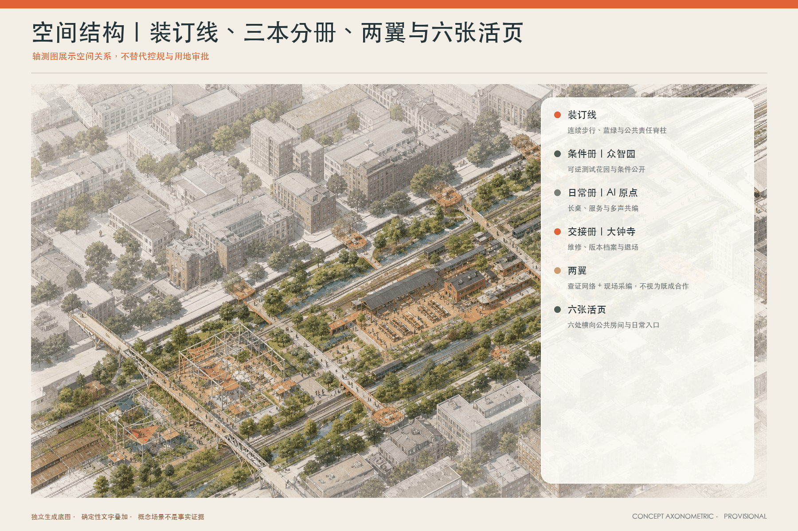
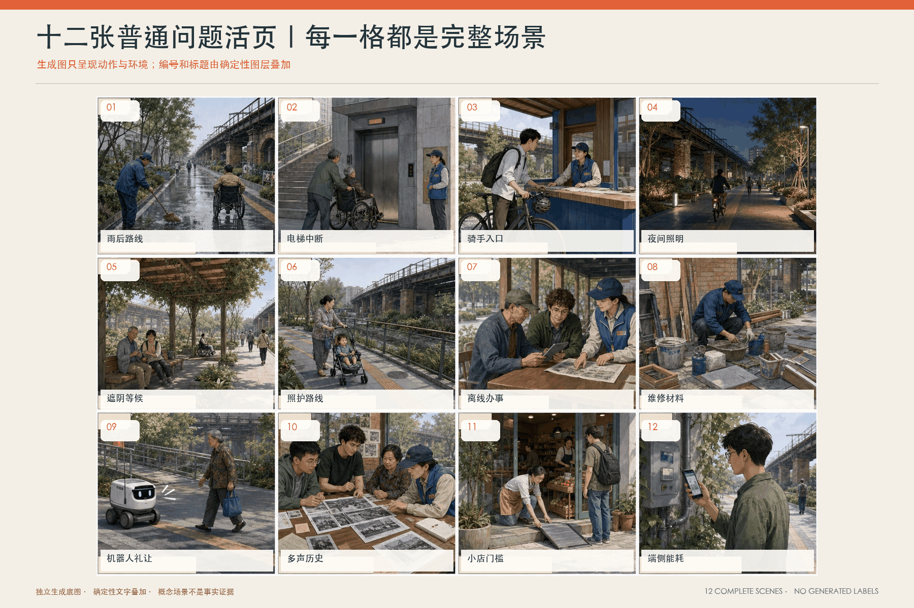
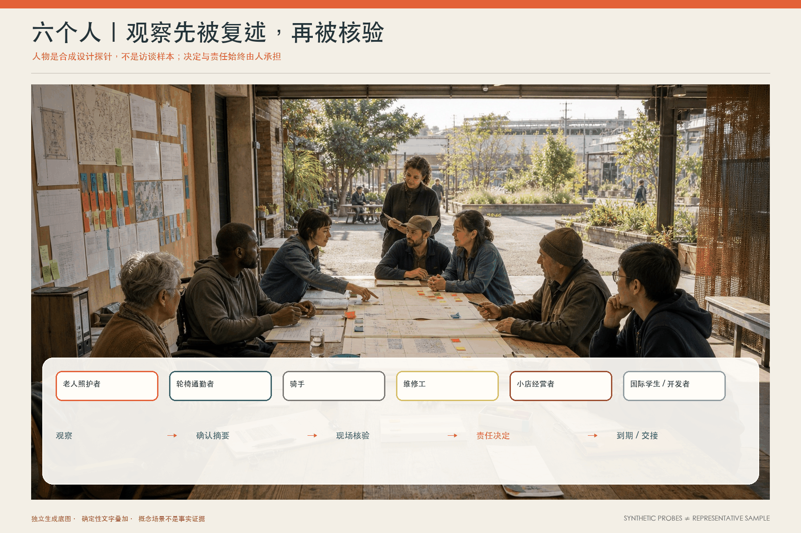
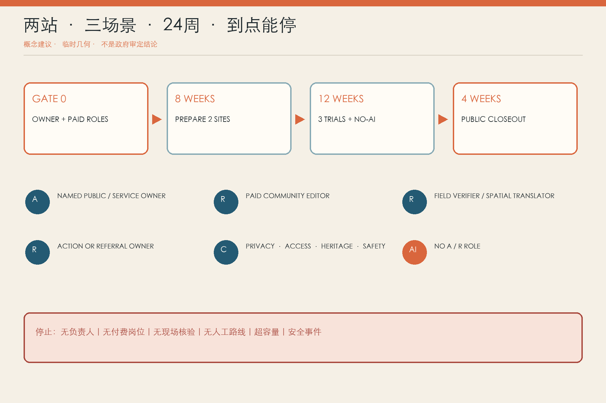
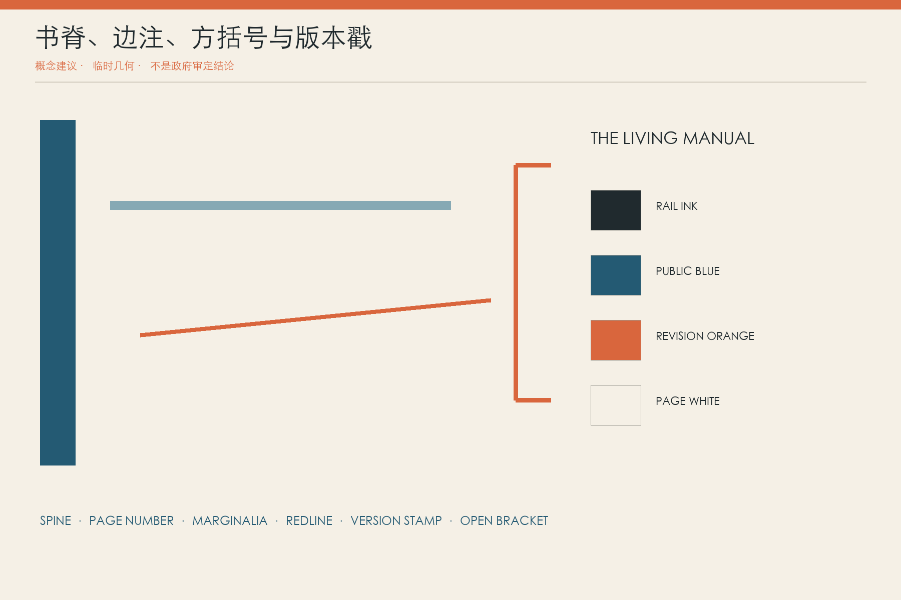

京张·生活说明书｜THE LIVING MANUAL
城市没有最终版：让每天使用、修理、等待和照料这里的人，把散落的地方知识写成可验证、可撤回、会过期的共同版本。
京张·生活说明书｜THE LIVING MANUAL
城市不是一本写完的说明书，而是一份永远留着边注的共同版本。
雨停后，一位推着婴儿车的人发现熟悉的小路积了水；午饭时，骑手到了园区门口才知道真正的入口在背面；换季维修时，一位师傅看一眼铺装就知道它明年还会翘边。三个人都懂这座城市的一部分，却很少被写进图纸。以上均为合成场景，不是采访或公众支持证据。
“生活说明书”要解决的不是“再收集一批意见”，而是知识怎样获得日期、适用范围、复核、责任、撤回和到期。AI 不替城市说话；它只把零散材料整理成一页可核对的草稿。提供者确认有没有被误写，现场核验者确认是不是场地事实，责任单位说明采用、转交或不采用的理由。没有这三次人类确认，就没有“城市知识”。

设计依据与资料清单
官方公告规定 43.6 平方公里统筹研究范围、约 11.4 平方公里总体设计范围、三处重点区域与成果语境；Agent 任务书规定三大定位、五大功能、三区两翼和六项必答任务 来源 来源。方案把二者当作任务边界，不把开放共创误写成已批准规划。
仓库公开包仍缺 official SITE_BOUNDARY、KEY_AREA、道路红线、现状建筑、文保控制、市政容量和控规条件。提交中的总体边界与三处重点区沿用维护者 provisional rough polygons；当前复算场地面积 11.41 平方公里，只可支撑内部一致性与概念比较 来源 空间数据 指标。所有精度敏感图层须在官方数据到位后整包重算。
核心判断与独立机制
方案的空间语法是：一条装订线、三本分册、十二张活页、六个边注口、三个版本地标、两翼查证/采编网络。
- 装订线：京张遗址公园方向的连续步行、绿荫与公共叙事联系，不等同于新道路。
- 三本分册：众智园《条件册》、AI 原点《日常册》、大钟寺《交接册》。
- 十二张活页：从雨后绕行到维护材料，从小店门槛到端侧算力能耗，每页都可到期、撤回和重写。
- 六个边注口：借用既有社区、校园、园区或公园服务空间的人工窗口，不是六栋新建筑。
- 三个版本地标：“空白第一页”“多声部长桌”“交接书脊”，分别提醒未知、分歧与责任交接。
- 两翼：中关村方向提供权利、标准和专业查证；小月河方向提供现场观察与日常试走。
这套机制不依赖个人 Agent、永久数字孪生或无限聊天。它是一条从人到场地、再回到责任人的有限工作流 深度。
三层范围工作框架
统筹研究范围讨论地方知识怎样成为 AI 生态的公共基础设施；总体设计范围把知识流嵌入空间与更新顺序；三处重点区验证三个不同问题。43.6 平方公里研究范围不画伪精确产业地图，只提出“谁能查证、谁能维护、谁能退出”的制度网络。11.4 平方公里总体模型表达装订线、横页、用地关系和小型公共接口。重点区只在 provisional envelope 内给出可逆原型 深度 空间数据。

统筹研究范围产业与未来城市研究
创新生态不只由企业和算力构成，也由翻译、无障碍核验、维护、数据撤回、争议记录和退出服务构成。可形成的智能原生岗位包括：社区编辑、空间翻译员、现场核验者、易读与多语编辑、无障碍测试员、模型卡/数据清单维护者、交接档案员。它们不是“志愿者补位”，而应进入付费工时、职业训练和采购范围。
全球案例只借机制：英国 ATRS 的公开记录字段、Decidim 的过程可追溯、Helsinki 测试床的小范围真实环境验证 来源 来源 来源。它们不证明北京应复制同一平台、标准或治理关系。本方案的独到处是把“记录”放进可步入的边注口，并让每条记录同时拥有地方范围、现场证据、责任路径和退场日期。
八个外部参照：只取机制，不偷换场地事实
| 参照 | 可借的一件事 | 京张中的转译 | 明确不借什么 |
|---|---|---|---|
| UK ATRS | 用固定字段解释算法用途、责任与影响 来源 | 每个 AI 场景先生成一页“条件册”，公开目的、数据、人工兜底、复核和退场 | 不把英国公共部门标准写成本地合规证明 |
| AI Verify | 把治理流程与技术测试放在一起 来源 | 三项先行测试同时检查模型输出、现场风险、人工接管与文档完整性 | 不声称通过某框架就获得认证或安全保证 |
| 荷兰算法登记 | 让公众知道系统、用途和责任单位 来源 | “交接书脊”公开版本、责任岗位、采用/拒绝和停止状态 | 不推定北京已有同类登记义务 |
| Decidim | 线上和线下参与都有可追踪过程 来源 | 纸卡、口述、实体墙与离线网页使用同一 page_id，不把二维码当唯一入口 | 不把参与数量等同代表性或共识 |
| Helsinki Testbed | 在真实环境小范围验证并保留协作网络 来源 | 两站、三场景、无 AI 对照、24 周收口；通过闸门才扩展 | 不复制其采购、数据、预算或绩效结论 |
| Boston CityScore | 按时间持续回看，而不是只报发布时成绩 来源 | 用“到期复核、交接完成、撤回传播”替代一次性活动人次 | 不移植综合分数、权重或目标值 |
| one-north | 把研究、企业、学习与生活放在同一创新片区理解 来源 | 三册分别连接测试条件、日常使用与维护交接，产业服务围绕真实后果产生 | 不移植土地、租赁、投资和治理安排 |
| Barcelona / 22@ 语境 | 把知识转移与城市片区更新联系起来 来源 | 两翼网络连接专业查证、在地采编、小微服务和人才学习 | 不复制开发权、用地比例或成效数字 |
这些参照共同说明：创新生态需要记录、测试、参与、运营和空间的结合；但它们没有提供京张的现状答案。所有外部事实都保持出版者、访问日期、时空范围和“不可用于”字段，避免把一个城市的项目介绍拼贴成本地证据。真正的本地化要从两处借用空间、具名岗位和可验证的小行动开始，而不是先画一张全球案例地图再宣布“世界级”。
产业链不是“企业名单”，而是六种可交接能力
第一层是采编能力：把口述、纸图和多语材料整理成仍保留语气与分歧的页面；第二层是场地能力：现场测走、无障碍检查、维护判断和专业转介；第三层是技术能力：在明确数据和风险边界内测试模型、端侧设备和人机接管；第四层是责任能力：让具体服务或维护单位能接单、解释和关单；第五层是权利能力：管理同意、脱敏、撤回、到期和投诉；第六层是交接能力：把版本和未完成事项移交下一班人。人才支持不以“吸引多少开发者”为唯一目标，而看本地一线人员是否获得有偿岗位、开发者是否学会写清边界、公共单位是否减少重复沟通、失败能否被安全关闭。
区域协同回路：五个邀请接口，不是五项合作承诺
任务书点名北纬社区、未来科学城、怀柔科学城、经开区与京津冀，但公开材料没有提供合作协议、责任单位、可共享数据、预算、场地或往来计划 来源。因此下图不是“现有合作网络”，而是一张待逐项邀请、核证和授权的接口图：生活说明书先带出一张脱敏的条件页或测试页，对方只在自愿、具名责任与用途清楚时提供一次校对；结果必须回到原页面，并允许“不合作 / 无法核证 / 不适用”成为正式结论。众智园承担条件与测试入口，AI 原点承担日常采编，大钟寺承担版本交接；中关村科技服务翼负责标准、权利与专业转介，小月河场景赋能翼负责现场观察、试走和维护反馈。两翼是本方案的概念责任分工，不是已设机构。

| 待邀请接口 | 拟交换的知识 / 测试 / 人才能力 | 启动条件与最小输入 | 责任类型与可核验输出 | 退出与非承诺边界 |
|---|---|---|---|---|
| 北纬社区 | 社区服务触点、日常路径与易读表达的在地校对；邀请一名有偿在地核验者参与一次试走 | 某页影响社区日常，且场地业主同意；仅输入脱敏页面、地点范围和待核问题 | 京张试点业主 A；受邀社区接口 C；输出一份有日期的“确认 / 分歧 / 无法核证”记录 | 不把一次参与写成居民共识，不建立长期个人档案；无具名接口或无补偿即不启动 |
| 未来科学城 | 比较试验设计、无 AI 基线与研究者短期互评；不交换未脱敏原始数据 | 场景已通过安全与隐私预审，并有可复现的测试卡 | 京张场景业主 A；受邀方法评审 C；输出带适用范围的方法意见和未解决问题 | 不声称联合实验室、认证或人才项目；对方拒绝或方法不适用即关单 |
| 怀柔科学城 | 对传感、测量或现场验证方法做一次技术可行性复核；人才仅以具名短期顾问席位进入 | 确有测量问题且现有人工方法不足；输入设备清单、指标定义和停止阈值 | 京张技术负责人 R；受邀技术评审 C；输出“可测 / 不可测 / 需补资料”的书面结论 | 不推定设备、场地或专家可用，不以交流代替采购、安全审查或专业签证 |
| 经开区 | 把场景测试转译成运营、维护和企业服务条件；邀请企业 / 一线运营者评估交接成本 | 某场景已有无 AI 对照和本地责任人；输入脱敏测试结果、维护条件与失败记录 | 京张行动业主 A；受邀运营评审 C；输出一页运行条件、成本缺口与接 / 不接理由 | 不构成招商、采购、入驻或示范认定；没有真实维护责任人就不进入企业转介 |
| 京津冀 | 比较不同地方版本的字段、停止门和公共表达；开展一次跨地同题校对或公开复现 | 两地均能公开方法与限制，且法律、数据和语言边界先行确认 | 各地各自对本地版本负责；输出差异表、可复用字段和明确不可迁移项 | 不建立跨域数据池，不把一地结果推广为区域结论；任一方无法撤回即停止交换 |
所有箭头都遵守同一闭环：京张提出有范围的问题 → 对方选择参与或拒绝 → 一次性校对 / 测试 → 差异与限制回写 → 本地责任人决定采用、转介或退出。这五个接口当前的证据状态均为“任务书点名、合作与能力未核实”；在取得公开来源、对方确认和具名责任前，不在宣传、图纸或指标中使用“已合作”“共建”“落地”或“联动成效”等词。
总体设计范围城市更新与控规深度城市设计
六个斜向“活页”完整覆盖临时边界，采用现有 land_use_code 表达研发、教育科研、社区服务、创新服务、文化记忆与适应性留白。它们是功能关系模型，不是法定地块 空间数据 标准。
更新顺序是“先能走、能坐、能问人，再谈智能化”：先修连续无障碍、遮阴、实体导视和人工窗口；再借用两个 12–20 平方米既有空间试点；最后才在证据充足的场景配置可关闭、可替换的技术。建筑图层只含三个约 18×12 米的参考包络，用于检查入口、桌面、等候、遮阴和交接展示的邻接关系，不代表新建体量、真实房间或投资承诺 空间数据 指标。
用地、建筑规模与拆改留方案
FAR、高度、密度、退线、道路红线、消防、排水、防洪、能源、网络、文保与权属均保持 unknown。拆改留只给决策门：优先核查保留；能通过首层开放、无障碍和可逆内装解决的优先改造；拆除必须等安全、碳、遗产、权属和社区影响完成专业评估 标准 深度。
六张用地活页与临时总体边界共享边界、完整覆盖且不互相重叠，面积只服务于方案内部复算。它们把研发验证放在需要被日常条件校对的位置，把教育科研、社区公共服务、创新服务与小微商业、京张文化记忆、适应性留白组织成可互相到达的功能关系；正式控规到位后，应以官方图斑整层替换，而不是把当前斜向边界微调成看似精确的地块 空间数据。
公共空间图层中的六个边注口和三个地标前庭是小型服务范围，不是建筑面积；建筑图层只有三个 216 平方米参考包络，合计 648 平方米 指标。真正试点优先借用两个既有 12–20 平方米室内角落，参考包络仅用于比较入口、等候、桌面、轮椅转身、遮阴和版本展示的邻接关系。没有现状建筑普查时不把任何真实建筑标为拆、改或留，也不据此编造投资与建设量。
重点区域详细设计
三区分别承担条件、日常与交接，不复制同一种“AI 园区”模板 深度 空间数据。
1. 众智园《条件册》＋“空白第一页”
技术团队先写一页“它不知道什么”：目的、服务对象、排除对象、数据边界、人工接管、场地条件、失败征兆和退出日期。空间上是借用前台旁的说明桌、室外 1:1 条件测试带和不采集身份的观察点。适合验证低速机器人礼让、无障碍路径说明和公共服务导航；不适合做开放人群上的高风险自动决策。
2. AI 原点《日常册》＋“多声部长桌”
同一条路至少在早高峰、午间、晚间和雨后被不同人批注。长桌不投票制造“统一意见”，而把冲突并排：骑手需要迅速到达，居民需要安静，轮椅使用者需要无障碍，保安需要可执行的入口规则。空间动作是多时段试走、纸面地图、可移动座椅与争议说明板。
3. 大钟寺《交接册》＋“交接书脊”
维护者、站点人员、小店与下一轮设计者共同填写“怎么修、用什么、谁接手、何时退休”。书脊展示版本号、采用/未采用理由、维修频率与停止决定，不做单纯成功展厅。空间动作是材料样本抽屉、交接台与连接周边公共服务方向的易读导视。

AI 创新生态、人才画像与 AI+ 场景
六个人物、十二张场景活页与三项产业测试
六个人物全部是合成设计探针：照护孙辈的老人、使用轮椅的通勤者、外卖骑手、一线维修工、小店经营者、中文不熟悉的国际学生/开发者。它们用来暴露流程盲点，不代表人口比例、访谈结论或公众授权 指标。
| 合成人物 | 他/她今天知道什么 | 生活说明书应当先提供什么 | 绝不能从人物卡推断什么 |
|---|---|---|---|
| 带孩子的老人 | 哪条路线少台阶、哪里能坐、哪个窗口愿意慢慢解释 | 不用手机的纸图、可坐下的人工窗口、当天有效的绕行说明、大字与易读版 | 不能因年龄推断数字能力、健康、家庭关系或服务资格 |
| 轮椅通勤者 | 电梯实际开闭、坡道被占、路缘和施工围挡是否真正可过 | 现场核验的连续路线、故障时等价路径、无障碍顾问签认、变化通知选择 | 不能把一次路径困难概括为所有残障者的共同意见 |
| 外卖骑手 | 不同时段哪个入口开放、门岗规则怎样执行、哪次绕行最危险 | 一页不含个人绩效的入口规则、付费共创时段、匿名提交和劳动争议隔离 | 不能把路线数据交给平台考核，也不能让个人承担场地规则错误 |
| 一线维修工 | 哪种材料难换、哪个节点反复坏、停机窗口多长才现实 | 材料交接页、维修频率、备件与责任岗位、可拒绝不安全任务的渠道 | 不能把经验当免费知识库，也不能公开可能影响其劳动关系的原话 |
| 小店经营者 | 临街客流、配送、夜间噪声和服务门槛怎样同时作用 | 易读资格说明、小微服务转介、施工/活动提前告知、可解释的不采用理由 | 不能把单店需求包装成商业街共识，也不能由 AI 决定资质和补贴 |
| 国际学生/开发者 | 多语材料哪里失真、技术团队容易误解哪些本地规则 | 中英对照、术语来源、人工解释、本地责任边界和退出说明 | 不能把国籍、语言或开发者身份变成商业画像、安全标签或代表性席位 |
人物卡只在设计阶段帮助提问。进入真实试点后，页面应记录“此次贡献者以什么角色观察了什么”，而不是建立长期人物档案。角色字段可选，姓名默认空白；需要跟进时，由提供者自行选择一次性查询码、电话或不接收通知。六张人物卡也必须在现场共创后接受删除、改写或新增，不能成为设计团队替真实人预设需求的借口 标准。
十二张活页：每张都有现场动作、AI 窄任务和停止门
| 活页 | 日常问题与现场动作 | 可测试的 AI 窄任务 | 人类责任、到期与停止 |
|---|---|---|---|
| 01 雨后路线 | 雨后两小时内由核验者走一遍，标积水、台阶、围挡和当天替代线 | 合并同地点重复观察，生成带“待核”水印的地图草稿 | 场地/排水责任人发布临时路线；雨情或施工变化即到期；若无人当天核验则不公开导航 |
| 02 电梯/无障碍中断 | 检查电梯状态、坡度、路缘、门宽和绕行距离，不只看底图 | 翻译报修与状态文本，比较昨日/今日路径差异 | 无障碍顾问确认等价路线，设施方负责修复；电梯状态不明或替代线不可达即停用 AI 建议 |
| 03 骑手与入口 | 在不采集订单和绩效的前提下记录时段、入口规则和实际绕行 | 对匿名入口注释去重，按时段与规则版本聚类 | 场地主体统一门岗规则和实体导视；不得回传平台考核；规则未获门岗签认即不发布 |
| 04 夜间照明 | 居民、行人和维护者分时查看暗区、眩光、遮挡与住宅影响 | 把时段、天气和方向整理成待测点清单 | 照明/安全人员实测并决定调试；涉及住宅扰民或安全冲突时先用可逆灯具、暂停自动调节 |
| 05 遮阴与等候 | 在热天记录座位、树荫、排队、照护和轮椅停留，不追踪个人轨迹 | 生成时段热区草稿并提示样本不足 | 公共空间负责人和使用者共同选点；没有维护与补水责任时不新增高维护设施 |
| 06 照护路线 | 推车者和老人走一条完整办事路线，记录停坐、厕所、门槛和换层 | 生成中英/易读步骤草稿，标注不确定环节 | 人工服务员当场提供路线并核文案；涉及健康、家庭或儿童信息时转受限队列，不公开原话 |
| 07 离线办事 | 以“没有智能手机、账号或稳定网络”为默认条件完成一次任务 | 整理材料顺序、检测专业术语并生成易读草稿 | 人工窗口完成服务并解释缺件；AI 不判断资格；若纸面/电话路径失效，数字场景不得称为可用 |
| 08 维护材料 | 维修者比较三种材料的拆换、备件、清洁、安全和停机窗口 | 对历次版本、故障类型和维护说明做差异表 | 维修负责人签认条件并可拒绝不安全方案；没有付费工时和许可选择就不采编经验 |
| 09 低速机器人礼让 | 在封闭或半开放样段记录近失、盲区、儿童/轮椅反应与人工接管 | 对事件做初步分类、标重复情形，不预测个人行为 | 现场安全员拥有急停、恢复和清场权；出现碰撞、无法解释的误判或接管失效立即停机 |
| 10 京张多声历史 | 把档案、居民记忆、维护记录和导览文本并排，保留来源差异 | 链接来源、提示文本冲突、生成多语草稿 | 档案/社区编辑决定展示结构而非唯一真相；来源不明、涉及私人创伤或权利不清时不公开 |
| 11 小店服务门槛 | 小店用真实但脱敏的办事路径检查材料、入口、配送与活动影响 | 把资格文字易读化并路由到正确人工部门 | 责任部门解释资格与不采用理由；AI 不审批、不评分；来源过期或无法人工复核即下线 |
| 12 端侧算力能耗 | 记录设备开机时段、功耗、散热、噪声、故障与实际被使用的功能 | 比较版本能耗与任务量，生成关闭/替换候选 | 设施负责人决定保留、降频、关闭或替换；没有计量、维护、消防和安全断电条件时不得安装 |
每张活页用同一页头：page_id / 版本 / 地点范围 / 时段范围 / 风险级别 / 当前状态 / 到期日；页身分为“观察”“经提供者确认的摘要”“分歧”“现场核验”“责任决定”“人工替代”；页尾记录撤回码、删改日志和下次复核。这样十二个场景共享治理骨架，但不会被同一个技术解法抹平成十二个 demo。
三项先行产业测试均有无 AI 对照：①无障碍路线，比较纸图人工路线与 AI 草稿的障碍遗漏；②低速机器人，比较人工观察表与 AI 近失归类，安全员拥有停机权；③公共服务导航，比较人工材料整理与 AI 摘要的错误、接管时长和被遗漏语言。若 AI 没有减少重复劳动、没有提高可读性或增加了核验负担，就移除模型，而不是为“AI 城市”保留它 标准。

人如何把一条边注写成城市动作
一条记录依次处于：个人观察（未核）→重复观察→现场确认→专业结论→决定/行动→到期复核。AI 永远不能把前一状态自动升级为后一状态。提供者先选择公开、限团队或只转交三档同意；编辑者在提供者面前确认摘要；核验者到场；责任人采用、转交或拒绝并写理由；到期后删除、归档或重写。撤回码可触发工作副本、公开页、索引与后续训练排除清单的传播，无法撤回的法定记录必须事先说明。
一条“骑手入口”边注怎样走完整条链
12:20，一位骑手在边注口用纸卡写“北门地图上能进，现场不让进”，不写姓名、订单或平台账号，只选“骑手/午间/限团队查看”。有偿社区编辑把它整理成：“工作日 12:00–13:00，公开导视与门岗执行可能不一致；需要核对入口规则。”骑手当场划掉“总是”二字，确认这次摘要没有夸大。AI 只在这一步帮助找出同一入口的三张匿名卡，并提示它们分别发生在上午、午间和周末，不能直接合并成一个事实。
次日，现场核验者带着纸图分别向门岗、物业和两侧入口走一遍，把“地图标注”“书面规则”“当班执行”和“无障碍/配送实际路径”分开记录。场地主体作为 A，物业业务负责人作为行动 R：若规则确实不一致，先换一张可逆导视并给门岗同一页说明；若规则有安全理由不能改，则说明原因和实际入口，而不是让骑手继续试错。七天后编辑者用查询码把结果带回；规则变化、施工或门岗调整即触发页面到期。任何环节若要求订单、连续位置或平台身份，这一页停止采集并进入隐私审查。
“撤回”不是网页上藏着一个按钮
撤回码由提供者持有，公开页不显示身份。收到撤回请求后，数据管理员先冻结再利用，把 page_id 写入撤回队列；随后在工作副本删除或脱敏原始观察、从公共页撤下摘要、更新搜索索引、通知已经收到该页的责任单位，并把该页加入未来训练/微调排除清单。每一步保留“谁在何时处理了哪一份副本”的日志，但不保留被撤回内容本身。24 小时内先完成公开撤下，随后按已批准的服务时限完成内部副本传播；真实时限必须在 Gate 0 由数据控制责任人依据系统清单确定，不能由本方案假装承诺。
如果某条材料已经形成必须保存的法定、财务或安全记录，采集前要用易读语言说明“哪些部分不能删除、保存多久、谁能访问、可否改正”。无法建立副本清单、无法传播撤回、第三方已不受控制，或模型供应商不能执行排除时，相关数据类型不得进入试点。到期与撤回不同：到期是系统主动提醒责任人删除、归档或重写；撤回是提供者随时发起的权利动作。两者都不能只把页面标成“关闭”却继续在后台保留可识别原文 来源 深度。

交通、轨道、市政与公共服务设施
装订线连接三处重点区的叙事顺序，六条边注横页面向社区、校园、园区和站点方向；它们只表达慢行联系意向，不虚构现状道路、桥隧、停车供给或轨道接口 空间数据。端侧设施必须可计量、可关闭、可替换，正式布置前核对能源、排水、防洪、消防、管线、噪声和网络安全。医疗、法律与公共服务的专业判断继续由有资质人员承担。
12 米参考断面只检验“雨水缓冲—连续步行—停坐—骑行—绿化”能否同时容纳，并不代表全线统一宽度。正式深化需要现状路权、交叉口、轨道出入口、公交、停车、消防、装卸、无障碍坡度和高峰流量；资料缺失时不提出机动车道删减或固定换乘工程。每条数字导航都必须有当天可用的纸图、实体标识或人工问询作为等价路径，电梯、施工和积水变化由现场核验更新，而不是由模型猜测 深度。
公共服务采用风险分流：普通空间边注进入有容量上限的编辑队列；即时安全、医疗、法律、未成年人保护和社会救助问题直接转既有紧急或专业渠道。边注口必须在同一视线范围展示人工时段、无障碍联系、紧急号码和闭站状态。市政/数字设施只按场景页设置开关、能耗记录、维护责任和退场日期；找不到设施责任人或无法安全断开时，不安装传感、屏幕或端侧算力设备 深度。
蓝绿空间、公共空间与城市风貌
绿脊以连续遮阴、雨水花园、停坐和夜间低眩光为底，三处“校对花园”容纳多时段观察。当前概念绿地率 3.48%、公共空间率 0.030% 只是 provisional 模型复算值 指标 指标。
六个边注口最小配置：一张双面桌、两把有靠背座椅、轮椅转身位、纸卡/大字/易读/中英说明、锁闭投递、清晰人工时段和紧急服务指引。无人值守时不放“假装在线”的屏幕。三个参考地标共同采用书脊、页码、方括号、边注线、红线修订和版本戳；铁灰表结构，公共蓝表说明，修订橙只标记真正发生过的回应。

数据、AI 与代表性边界
AI 只做七件事：转写、翻译、去重、聚类、结构化草稿、路由、版本差异。AI 不判定真实性、不排服务优先级、不决定资格、不分配资源、不做医疗/法律/规划结论，也不是 RACI 中的责任人。
最低记录字段为：page_id、时间/地点范围、可选贡献者角色、同意级别、原始观察的受限副本、经确认摘要、分歧、现场核验、责任人、状态、风险级别、到期日、撤回码、删改日志、版本哈希。默认不收音视频、连续位置和实名；公共页面只显示脱敏摘要。涉及第三人、健康、未成年人、安全漏洞、诽谤风险或劳动关系的材料进入人工受限队列，不在公共墙展示。
三档同意和四类队列
公开只允许经过提供者确认和编辑者脱敏的结构化摘要；限团队允许有期限的原始文字给编辑/核验者查看，但不出工作区；只转交用于希望获得帮助却不愿公开的情况，责任单位收到必要事实后，公共台账只显示“已转交/已关闭”而不显示内容。同意可以从公开降到限团队或撤回，不能由运营方默认为更开放。纸卡、口述和数字输入使用同一套同意语句；口述不得默认录音，编辑者当面读回文字即可。
普通空间问题进入常规队列；无障碍中断但有替代线进入优先队列；即时人身安全、医疗、法律、未成年人保护和社会救助进入专业转介队列，不等待编辑会；第三人、劳动关系、诽谤、安全漏洞和敏感数据进入受限审查队列。每类队列都要有最大容量、公开关闭状态和升级路线。排队时间不是统一的 3/14/30 天口号，而由风险、人员班次与接单单位共同确定；队列到上限就暂停新采集，先处理积压 深度。
数据最小化清单在试点前锁定
Gate 0 必须逐字段回答：为什么需要、谁读取、保存在哪、保存多久、怎样撤回、怎样导出、怎样删除、是否进入模型、供应商能否看到。姓名、身份证、面部、声纹、连续位置、订单、健康、家庭、设备广告标识 默认都不在清单中。若某一场景确实需要联系方式跟进，联系方式与观察内容分库存放，用一次性 token 连接并在关单后先删除联系方式。页面版本哈希只证明内容版本一致，不用作人员追踪。统计只在样本足够且重识别风险可控时发布；小样本不做街区排名、人员画像或“多数意见”。
六个合成人物不是“居民代表”。正式试点只能称参与席位，并公开招募范围、未覆盖群体、补偿、退出与投诉路径。骑手、保洁、维修等被定向邀请的一线人员必须计入付费工时；若没有补偿预算、工时上限、署名/匿名/许可选择，就不得启动定向采编 深度。

更新项目清单、实施政策与分期计划
八个项目不是八项建设承诺：LM-01 生活页协议；LM-02 两处借用边注口；LM-03 装订线可达性核查；LM-04 三处分册原型；LM-05 十二场景卡；LM-06 版本与撤回登记；LM-07 有偿编辑/核验岗位；LM-08 公开收口与交接。
| 编号 | 最小成果 | Gate 0 必须确认 | 通过标准 | 停止/不做 |
|---|---|---|---|---|
| LM-01 生活页协议 | 一张中英/易读纸卡、三档同意、六状态、风险队列和到期模板 | 数据控制责任人、隐私审查、撤回副本清单 | 提供者能读回并纠正摘要；纸面和数字状态一致 | 仍需强制实名、默认录音或无法撤回就不启用 |
| LM-02 两处借用边注口 | 两个 12–20 平方米既有角落、可坐桌椅、轮椅转身、实体导视、锁闭投递 | 场地主体、开放时段、保险/安全、人工轮班 | 没手机的人能在当次获得帮助；闭站状态清楚 | 无长期值守岗位、无转介路线就不开放采集 |
| LM-03 装订线可达性核查 | 三种时段＋雨后试走、障碍/遮阴/停坐/入口图，不画伪道路红线 | 交通、无障碍、设施与场地接口 | 至少两条可执行的小修补或导视交接 | 缺现场权限、轨道/道路资料时不做工程断言 |
| LM-04 三处分册原型 | 条件页、多声桌、交接页各一套 1:1 可逆家具/界面测试 | 三处 host 与对应服务责任 | 三种原型产生不同证据和责任动作，而非换名字 | 若只剩展陈、打卡或大屏展示，停止资本化扩张 |
| LM-05 十二场景卡 | 每张写问题、AI 窄任务、人类责任、无 AI 基线、到期和硬停 | 场景业主、安全/专业人员、测试场地 | 三项先行测试能比较工作量、错误和接管 | 需要开放人群高风险决策或没有急停权就不测 |
| LM-06 版本与撤回登记 | public/team/referral 分层台账、删改日志、到期提醒、排除清单 | 数据系统地图、管理员和供应商承诺 | 随机抽一页可完整撤下并追踪副本处理 | 供应商黑箱、训练不可排除或副本不清就不收该类数据 |
| LM-07 有偿岗位 | 社区编辑、现场核验/空间翻译两类岗位说明、工时和替补 | 预算持有人、薪酬/采购路径、劳动与投诉渠道 | 值守、现场走查、提供者确认都有真实工时 | 只能靠志愿者、实习生或一线人员无偿加班就不开试点 |
| LM-08 公开收口与交接 | 采用/转交/拒绝/撤回/到期清单、未完成事项和下一责任人 | 业主签字、档案去向、场地恢复和资产移交 | 至少两项小行动完成交接；失败与停止也公开 | 只发布活动人次和“好评”，不说明未处理事项则不宣称成功 |
项目之间不是线性施工关系：LM-01、LM-06、LM-07 是治理基础，必须先于空间采集；LM-02 和 LM-03 提供人可到达的现场基础；LM-04、LM-05 才是设计和产业测试；LM-08 从第一天就要定义，因为一个试点如果不知道怎样结束，也就没有资格开始。分期 GeoJSON 表达的是三道条件性干预范围，不是投资地块或开工次序 空间数据。
| 工作 | A 最终负责 | R 执行 | C 必须咨询 | I 被告知 |
|---|---|---|---|---|
| 试点边界与预算 | 具名公共/服务业主 | 项目经理 | 场地主体、采购、法务 | 公众 |
| 倾听与摘要确认 | 公共/服务业主 | 有偿社区编辑 | 提供者、易读/多语编辑 | 公众仅见脱敏版 |
| 现场事实 | 专业责任单位 | 空间翻译员/现场核验者 | 无障碍、遗产、安全等专家 | 提供者 |
| 采用、转交或拒绝 | 对应维护/服务业主 | 业务责任人 | 编辑者、核验者 | 提供者与公众 |
| 数据撤回与到期 | 数据控制责任人 | 数据管理员 | 隐私/安全专业人员 | 受影响者 |
AI 不在 A/R 列。紧急安全、医疗、法律与社会服务问题不进入普通编辑队列，而是转到既有紧急/专业渠道；边注口必须展示这些渠道。
RACI 中最容易被忽略的是“同一个问题在不同阶段换 A”。采集阶段由试点业主对是否收集负责；现场事实由有资质的空间/设施责任单位对判断负责；整改或服务决定由真正拥有预算和权限的业务业主负责；数据撤回由数据控制责任人负责。项目经理或社区编辑不能替没有权限的单位承诺整改，也不能让匿名的“相关部门”成为责任终点。每张页面在进入下一状态前都要显示当下 A/R 的公开岗位与联系方式；人员离岗时必须交接到岗位而不是个人手机号。
容量不是后台参数，而是公共承诺
试点开放前按每周值守工时估算最大新页数、现场核验次数和专业转介数。例如，若两个编辑每周只有合计 12 小时，扣除提供者确认、现场会和关单后，不能仍按“无限投稿”设计入口。运营看板只公开四个简单状态：本周开放时段、常规队列剩余容量、优先/专业转介是否正常、下一次公开编辑会。达到上限时关闭新增长表单，只保留即时帮助和紧急转介；不得用 AI 自动回复制造“已经受理”的假象。连续两周积压、两次人工路径失约或出现一宗严重安全/隐私事件，都触发暂停和独立复盘。
分期采用四道闸门：Gate 0 确认业主、两处可达场地、付费角色、隐私/无障碍审查和转介路线；Gate 1 用 8 周准备两站三种低风险场景；Gate 2 做 12 周试点与无 AI 对照；Gate 3 用 4 周公开收口。只有出现可追溯交接、至少两项小型维护/空间动作闭环、撤回能传播、队列未超容量，才讨论扩到六站 空间数据 深度。
硬停止门：没有具名 A；没有有偿编辑或核验者；需要默认收集敏感原始数据；强制实名或持续追踪；AI 摘要抹去分歧；没有现场核验；没有人工路径或专业转介；出现安全事件；积压超过公开容量；没有单位承接行动。触发任一项即暂停对应场景并公开原因。

指标体系、面积复算与合规矩阵
空间模型值从同一组 GeoJSON 在 EPSG:4548 下复算：面积 11,412,825 平方米、绿地 396,604 平方米、九处小型公共节点 3,477 平方米、三处参考包络合计 648 平方米；六个边注口、三个地标、十二张活页与三处重点区可由结构化文件直接计数 指标 指标 指标。
试点真实指标不预填：摘要被提供者改回的比例、现场核验时长、按风险分级的积压、完成交接数、采用/转交/拒绝比例、撤回传播成功率、无 AI 与 AI 工作量差、到期删除完成率。没有真实试点就不声称满意度、代表性或成效。完整任务覆盖、专业标准和深度证据分别保存在三个矩阵文件 深度。

命名、视觉识别与长期运营
“生活说明书”不是单一真理。无文字标记是一条深蓝书脊、一条橙色边注和一个未闭合方括号，表示版本始终可被改写。三级命名为《条件册 / Condition Book》《日常册 / Everyday Book》《交接册 / Handover Book》；物理点位统一叫“边注口 / Marginalia Port”。视觉中禁止企业 logo、可识别人物、虚假屏幕数据和“智慧城市大脑”意象。
Agent.6 年度运营与非承诺转化矩阵
年度活动不是 demo 秀。每一项先绑定责任、预算、容量、可验证输出和停止条件；活动本身不许被算作合作、就业、招商或规划落地。建议只在 24 周试点完成 Gate 3、撤回审计有效且下一年度责任人到位后启动下表 标准。
| 活动品牌 | 频率 / 启动触发 | 主要参与者与责任岗位 | 最小输入 | 可验证输出 | 容量上限与停止条件 |
|---|---|---|---|---|---|
| 城市校对周 | 每年一次；至少两版已完成到期复核，且具名业主书面同意主持 | 提供者、维修者、服务业主、学生和开发者；试点业主 A、运营统筹 R、有偿社区编辑 R | 脱敏版本日志、已采用 / 转交 / 拒绝 / 撤回 / 到期 / 未解决清单 | 一份公开年度差异表；每项有责任岗位、下次复核日或退出理由 | 60 人、12 页、2 处场地；无预算、无无障碍场地、撤回未传播或责任人缺席即停办 |
| 维修者讲台 | 每季度一次，或同类维护问题出现三次后；先确认付费工时 | 一线维修者、设施方、材料 / 安全顾问；设施业主 A、有偿维修主持 R | 三个脱敏故障页、材料样本、停机窗口和安全边界 | 三份维护条件卡；形成工单、专业转介或“不采用”理由之一 | 12 名有偿贡献者、3 个案例；出现无偿知识提取、不安全任务或劳动关系敏感暴露即停止 |
| 多语校对桌 | 每月最多一次，只在公共页面有实质改版时启动 | 双语居民、国际学生 / 开发者、专业译者、服务业主；服务业主 A、有偿语言编辑 R | 有来源的中英母本、术语表、易读版和适用日期 | 经责任人确认的双语差异表、未决术语清单和发布日期 | 最多 4 种语言、8 页；无母本、涉及医法但无专业复核、无补偿或无撤回选择即不发布 |
| 无障碍试走 | 每季度一次，并在路线、施工或电梯状态显著变化后触发 | 残障使用者、照护者、无障碍顾问、设施方；设施业主 A、有偿无障碍顾问 R | 当前路线、等价替代线、临时工程说明、天气与时段 | 带时间戳的问题单、当天可用替代线、业主采用 / 转介 / 拒绝决定 | 每次 2 条完整路线、8 名有偿参与者；恶劣天气、无安全员、无当天替代线或无法承担整改即暂停公开导航 |
| 失败版本展 | 每半年一次，且至少有两个已正式关闭或拒绝的版本 | 提供者、业主、设计者、开发者、档案员；试点业主 A、交接档案员 R | 权利已清理的失败日志、影响范围、修复尝试和退出记录 | 最多十张失败卡：错在哪里、影响谁、如何修、为何退、哪些内容禁止复用 | 10 个版本；权利不清、归责到个人、为展览夸大失败或严重事件尚未独立复盘即停 |
| 全球交接日 | 每年一次，且本地收口包、英文译本和不迁移清单齐备 | 受邀城市 / 实验室 / 从业者、本地业主与译者；本地业主 A、双语交接编辑 R | 公开脱敏的方法、假设、无 AI 对照、停止决定和许可说明 | 可下载交接包、收到的问题、可复用字段、本地采用 / 不采用决定 | 5 个案例、3 个时区；无本地适用性审查、无翻译预算、数据不能撤回或对外被包装成合作签约即取消 |
人才、开发者、企业与外部机构都走同一条非承诺路径：参与 → 有边界测试 → 专业转介 / 合作审查 → 交接或退出。参与只证明完成一次有偿任务；测试通过只证明在声明条件下达到阈值；专业转介不等于就业、采购、招商或认证；合作审查由真正拥有预算、法务和场地权限的主体决定；最后必须交接给具名岗位，或公开退出与不可复用项。具体转化门如下：社区贡献者只有在公开岗位、预算和自愿申请存在时才进入有偿编辑池；开发者只有在组件通过许可、安全、无 AI 对照和维护能力检查后才进入复用清单；企业只有在采购 / 合规流程独立完成后才可能承接服务；外部机构只有在双方明确数据、署名、撤回和期限后才进入一次性合作。任何一步都允许不继续，且不得用参与者照片或活动人次暗示承诺。


风险、版权与合规说明
可行的是一个有条件的小试点，不是整带立即建设。 两个既有空间、纸卡、人工编辑与三种低风险场景在找到业主、预算和转介接口后可启动；六站、三地标与技术系统只能作为后续选项。最大风险不是模型不够聪明，而是把参与当免费劳动、把个人叙述公开、把临时边界画成法定事实、把无人处理的意见包装成“共治”。本方案为每一项风险设置责任、停止门和重算触发器。
本方案是概念建议、非审定规划：不构成政府审定结论，不替代法定规划、工程设计、公众参与程序、数据保护影响评估、文物保护审查或采购决定；不承诺资金、岗位、场地、实施时间、居民支持和运营成效。图纸中的临时边界、功能分区、参考断面与参考包络只用于解释空间关系和复算方法 来源 标准。
图件、人物与封面均为原创概念表达，不是现场照片或真实访谈。同行方案只用于反向检查独立性 来源 来源。本包不替代法定规划、工程设计、公众参与程序、隐私影响评估或政府审定。
参考资料
- 官方公告与 Agent 任务书 来源 来源
- 仓库 provisional 边界、source registry 与 fact pack 来源 来源
- 公开记录与治理测试：UK ATRS、AI Verify、荷兰算法登记 来源 来源 来源
- 参与、真实环境试点与纵向复盘：Decidim、Helsinki Testbed、Boston CityScore 来源 来源 来源
- 创新片区与知识转移：one-north、Barcelona/22@ 来源 来源
每一条被采用的城市动作都应在版本日志中公开原始来源、核验人、取舍理由与到期时间；若来源因隐私或权利限制不能公开，则说明理由并给出可复核的替代证据。完整出版者、访问日期、范围、复用边界和局限见 sources.json。